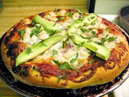

Back Home
No-Dough Potato Pizza

Description
This potato pizza swaps traditional dough for a crispy crust made from thinly sliced potatoes. Topped with two kinds of cheese, bacon, and green onions, it’s a hearty, customizable dinner made with just one russet potato.
Ingredients
- 1 large russet potato, scrubbed and peeled
- 2 tablespoons olive oil
- salt and pepper to taste
- 1/2 cup shredded mozzarella cheese
- 1/2 cup shredded sharp Cheddar cheese
- 1/4 cup crumbled, cooked bacon
- 1 green onion, sliced
Steps
- Preheat the oven to 375 degrees F (190 degrees C). Using the slicing side of a box grater, slice potato into thin rounds.
- Line a baking sheet with parchment paper. Lay potato slices on the parchment paper to form a wide circle, slightly overlapping slices and ensuring no parchment is left uncovered. Drizzle slices with olive oil, then season lightly with salt and pepper.
- Bake in the preheated oven until potatoes are slightly fork tender, 15 to 20 minutes. Remove from the oven. Cover potatoes with mozzarella cheese, then Cheddar. Return to the oven until cheese melts slightly, about 5 minutes. Remove from the oven and top with bacon. Return to the oven and let bake until cheese is completely melted, 5 to 6 minutes.
- Remove and sprinkle with green onion. Let cool for 3 minutes before removing from parchment to a work surface. Cut into wedges.
Attributaion
This is a class project, thanks to the amazing team at All RecipesAllRecipes for providing this recipe.
You can find the full recipe here. Click on the link to access. No-Dough Potato Pizza